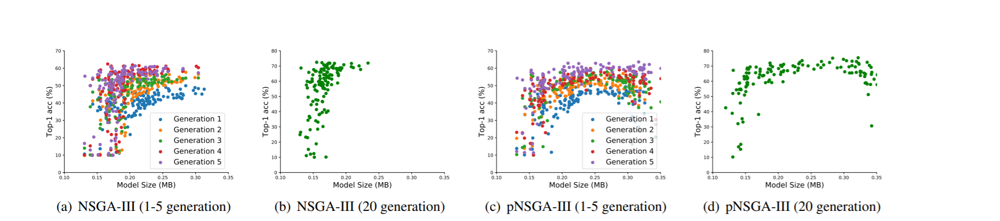
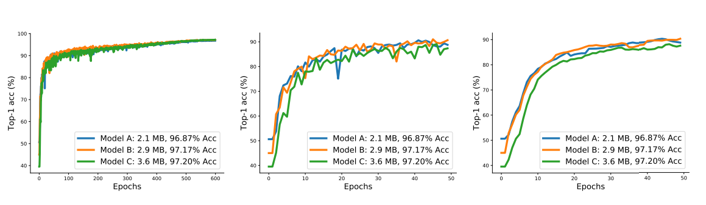
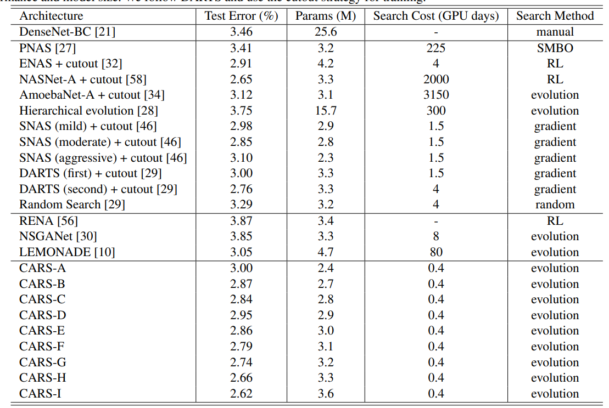
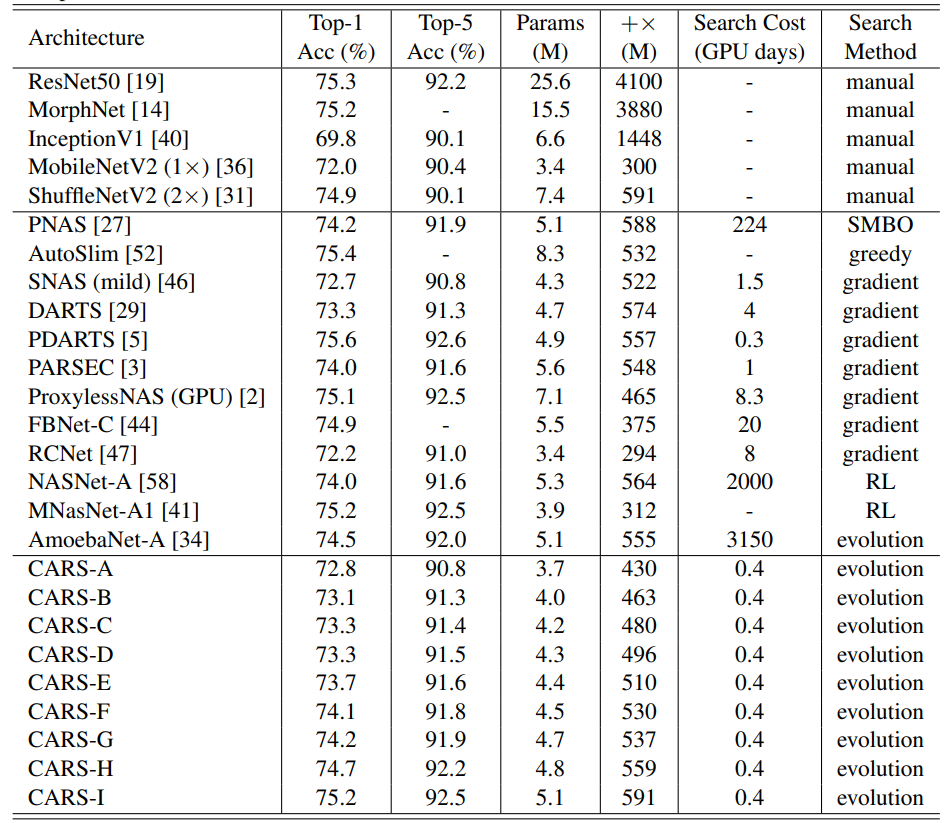

自动炼丹也能又快又好？解读来自华为的连续进化搜索算法CARS
前言
华为诺亚方舟实验室发布了一篇论文《CARS: Continuous Evolution for Efficient Neural Architecture Search》被 CVPR 2020收录。论文中提出了一种连续进化网络结构搜索算法(continuous evolution architecture search，CARS)，可以利用上一轮进化的参数或者结构来构造超网来实现参数共享，再从超网中生成子网，并对其进行排序，从而选择优异的网络。这种算法整体耗时仅仅需要0.4 GPU day，优化了进化算法在神经网络结构搜索时候选网络训练时间过长的问题。
背景介绍
人工神经网络的应用使得计算机视觉任务取得了巨大的进步，但网络的设计却很大程度上依赖于人类的经验，且会耗费大量时间和经历。而神经网络结构搜索（Neural Architecture Search，NAS）可以通过设计不同的搜索算法来自动获得泛化能力强，硬件要求低的网络结构，是目前自动机器学习（AutoML）领域的热点问题之一。目前神经网络结构搜索的搜索策略可以分为三种：
- 基于强化学习（Reinforcement Learning，RL）
- 基于进化算法（Evolution Algorithm，EA）
- 基于梯度的方法（gradient based）
有研究表明，论文中涉及的进化算法能得到比强化学习更好的模型，但由于进化算法中的个体网络都是独立验证，导致其需要耗费大量的时间。论文因此提出一种修改的进化算法——连续进化网络结构神经网络搜索(continuous evolution architecture search，CARS)来最大限度的利用上一代进化过程中的知识，从而提高算法的效率。
算法介绍
算法流程
首先初始化一个具有大量cells和blocks的超网（SuperNet），超网通过一些基准操作（交叉和变异）来生成进化算法中的个体，也就是子网。接着再使用非支配排序（Non-dominated sort）来选取一些不同大小和准确率的优秀模型，并更新这些子网对应的超网中的cells以便于随后的优化。在下一代的进化算法中，会继续基于更新后的超网和非支配排序得到的多目标解集来进行。 论文使用基因算法（Genetic Algorithm，GA）来进化网络的结构，并且使用一个超网 N在不同的结构中共享权重，从而大大降低了计算复杂度。
CARS中的超网：
不同的网络N_i是从超网N中采样而来，每个网络 $N_i$ 可以由全精度参数 $W_i$ 和二值连接参数（也就是{0，1}）$C_i$ 来表示。$C_i=0$ 代表网络没有此连接，$C_i=1$反之，所以每个子网 $N_i$ 可以表示为 $Wi$,$Ci$ 对。
全精度参数W在网络集合中共享，如果网络结构固定则可以使用反向传播来优化W,优化后的W适用于所有的N_i以提高识别性能。在参数收敛后，我们就可以用基因算法去优化二值连接C_i
参数优化
$W$为网络中所有参数，有$W_i=W\odot C_i$其中 $\odot$ 为mask操作。
参数$W$适用于全部子网，所以用全部子网来计算参数的梯度，公式如下
其中$L_i=\mathcal{H}\left(\mathcal{N}_\mathcal{i}\left(X\right),Y\right)$为损失值，Y为目标值，H为损失函数。再借鉴SGD的思想，用小批量的网络来接近整体网络的梯度，达到优化性能的目的，公式如下：
其中B小于P。
结构优化
结构优化使用进化算法配合NSGA-III的非支配排序。支配的定义是什么呢？简单的说，如果两个子网络$N_i$和$N_j$符合以下两个条件，那么就称为$N_i$支配$N_j$:
- 在任何指标中$N_i$都不差于$N_j$
- 存在至少一个指标，使得$N_i$的表现超过$N_j$
如果$N_i$支配$N_j$，那么在进化过程中就可以用$N_i$取代$N_j$，通过不断的使用支配就可以在当前一代的种群中选出优秀的子网，这些优秀子网就可以接着被用于更新超网中相关的参数。
与此同时，在非支配排序使用NSGA-III算法的时候，依然会遇到小模型陷阱现象（small model trap phenomenon）。论文中提出了NSGA-III的改进算法pNSGA-III，改进点在于把准确率和参数数量的增加速度纳入考虑中，而不只局限于验证时的准确率和参数的数量，再同时参考两种非支配排序。

结果如图所示，使用pNSGA-III算法最终保留了的模型大小范围更广，分布更为均匀，而NSGA-III在20代的时候保留模型的大小多集中于0.15MB到0.20MB，同时Top-1准确率比起NSGA-III甚至略有优势。
优化策略
参数预热（Parameter Warmup）：因为超网的共享权重是随机初始化的，所以如果子网也是随机初始化，就会导致出现次数多的会比其他的训练的次数多。因此，论文中使用了均匀采样策略来初始化超网中的参数，这样就能以相同的概率公平的训练所有可能的网络。
结构优化（Architecture Optimization）：在初始化超网后，首先随机选择P个不同的结构作为进化算法的父代个体。在后续的进化算法过程中，先生成$t\ \times P$个子代，再使用pNSGA-III从$\ \left(t+1\right)\times P$个个体中选择P个来作为下一代的父亲个体。
搜索时间分析：
训练集用于更新网络参数，测试集用来更新网络结构。网络的最终搜索时间计算如下：
$\begin{aligned} T_{\text {total}}=& T_{\text {warm}}+T_{\text {evo}} \\=& E_{\text {warm}} \times T_{\text {tr}}+\\ & E_{\text {evo}} \times\left(E_{\text {param}} \times T_{t r} \times B+T_{\text {val}}\right) \end{aligned}$
实验结果
为了阐释论文中方法的有效性，实验设置使用了被广泛运用的DARTS搜索空间。DARTS包含的操作有四种卷积，两种池化，skip连接和无链接。
在CIFAR-10上的实验
小模型陷阱

实验结果显示了小模型陷阱和使用pNSGA-III的必要性。由图可知，最终模型C取得了最好的top-1准确率，但是如果使用NSGA-III算法，模型C在前50轮就会被淘汰掉。
使用CIFAR-10搜索
论文中实验将CIFAR-10数据集分为两部分，包括25000张图片用于训练，25000张图片用于验证。分割训练和验证集的策略余DARTS和SNAS相同。实验一共搜索500个epochs，warmup阶段为50个epochs。然后初始化一个包括128个不同子网的种群，在网络参数每更新10次以后，使用pNSGA-III更新网络结构。
使用CIFAR-10验证

搜索的验证结果表如上图，可以看到搜索用时仅为0.4 GPU days，且最好的结果为CARS-I网络，测试错误了仅为2.62%。无论是搜索用时还是网络性能都十分优异。此外，模型的大小分布较广且比较均为，从2.4M到3.6M都有。可以说，CARS用更小的模型，更少的时间获得了更好的性能。
使用ILSVRC2012验证：
论文实验还将用CIFAR-10搜索的模型迁移到ILSVRC2012，结果表明模型的迁移性也相当不错。
使用ILSVRC2012验证
论文实验还将用CIFAR-10搜索的模型迁移到ILSVRC2012，结果表明模型的迁移性也相当不错。

总结
进化算法在神经网络搜索领域有相当不错的表现，但是搜索时间却很长。这篇论文提出的连续进化网络结构搜索算法（continuous evolution architecture search，CARS），最大化利用上一轮进化的结构和参数，很大程度上减少了网络搜索和训练的用时，在CIFAR-10数据集的实验仅仅用时0.4 GPU day的同时，也取得了相当高的准确率和不错的模型大小。最近神经网络结构搜索越来越热门，但是其庞大的资源和时间消耗却限制了很高的门槛，CNRS的方法或许可以让更多的人能体验到自动机器学习的魅力。